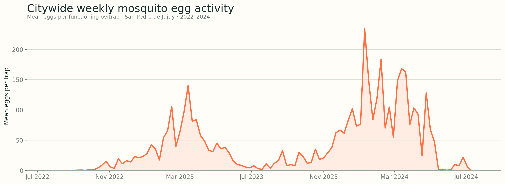

SAN PEDRO DE JUJUY · ARGENTINA · WEEKLY SURVEILLANCE
One mosquito signal.
Three scales of time.
Separate the broad oviposition pattern from between-season anomalies and short-term weekly fluctuations. Each layer asks a different question of the same 106-week surveillance record.
OBSERVATION WINDOW
Loading…
STUDY AREA
Weekly mosquito egg activity
This citywide summary presents the temporal surveillance pattern without publishing individual ovitrap identifiers, locations, or trap-level observations.

THE ANALYTICAL FRAMEWORK
Explore three temporal layers
Move between layers without mixing their interpretations. Raw seasonal correspondence, departures from expected seasonality, and adjusted short-term effects answer complementary questions.
LAYER 1 · NB-GLM
What tracks the broad timing and magnitude of oviposition?
Explore raw weekly values and Spearman cross-correlations. The final negative-binomial model adjusts for valid-trap effort and combines the strongest complementary predictors.
Lag 0 is the egg-collection week. Lags 1–6 represent conditions one to six weeks before collection.
Same-week vapor pressure reached ρ = 0.88 in the explorer dataset and remained comparatively high across the tested lag window.
FINAL MODEL · M666.7%null deviance explained
Mean temperature + 3-week mean vapor pressure + interaction + SSTA + NDVI
FINAL M6 MODEL · IN-SAMPLE FIT
Observed vs. NB-GLM fitted oviposition
The fitted rate uses the manuscript’s final coefficients for mean temperature, three-week vapor pressure, their interaction, Niño 3.4 SSTA, and NDVI.
The fitted trajectory is an in-sample model result, not an out-of-sample forecast. The manuscript reports Pearson r = 0.80 and SSE-based R² = 0.432.
LAYER 2 · GAUSSIAN REGRESSION
What aligns with departures from the expected seasonal pattern?
Egg anomalies use the two-year study-period monthly pattern. Local climate anomalies use 1991–2020 reference values; NDVI uses 2014–2020. Associations are exploratory.
The zero line marks the expected seasonal value. Weekly lags use the full climate record so all 106 egg observations remain available.
β = +17.72 eggs/trap per 1 SD · R² = 0.337 · AIC = 985.93
INTERPRETATIONBroadbetween-season signal
SSTA reproduced the transition from negative anomalies in season one to positive anomalies in season two, but not weekly peaks.
LAYER 3 · SPLINE-ADJUSTED NB-GLM
Which local conditions relate to short-term weekly fluctuations?
A natural spline controls the seasonal and between-season background. Estimates below compare the main spline-only model with a sensitivity model that also adjusts for previous-week egg abundance.
OBSERVED VS. FITTED
Spline-only and spline + lag-1 models
Spline onlySpline + lag-1
Both fitted lines control broad seasonality and between-season variation; the lag-1 model additionally uses previous-week egg abundance.
READING GUIDE
How to read this explorer
Overall pattern
Spearman screening describes raw seasonal correspondence. The NB-GLM models total eggs with valid traps as an offset.
Seasonal anomaly
Pearson and Gaussian regression examine departures from an expected seasonal baseline, including ENSO-related variability.
Short-term association
Spline-adjusted NB-GLMs isolate faster weekly variation after controlling broad seasonal and between-season structure.
Data sources
Weekly ovitrap surveillance; ERA5-Land local climate; remotely sensed NDVI; NOAA Niño 3.4 sea-surface temperature anomaly. Environmental coverage: 1991–2024.